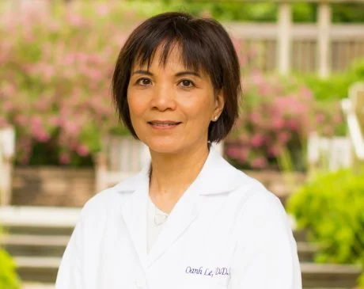

Our Practice
Thirty years of general and cosmetic dentistry in San Mateo.
Compassionate care across every service, from routine cleanings to cosmetic dentistry and urgent visits. See the full list on our Services page.

A practice that started with one patient at a time
Dr. Oanh Le earned her D.D.S. from Northwestern Dental School in 1990, then completed a two-year residency at UCSF in Advanced Education in General Dentistry. She's run her San Mateo practice — the same office — ever since.
Leading-Edge Dentistry
Still learning. Still teaching.
A teaching career, too
Since 1995, Dr. Le has also taught at the UCSF School of Dentistry, where she holds the title of Health Sciences Clinical Professor.
Evidence-based, current
Decades of experience, current evidence-based knowledge, and genuine care shape how she explains every option.
Function meets aesthetics
An integrated approach to function and aesthetics, for a smile that's healthy and looks the way you want.
See the full range of care Dr. Le provides. View services →